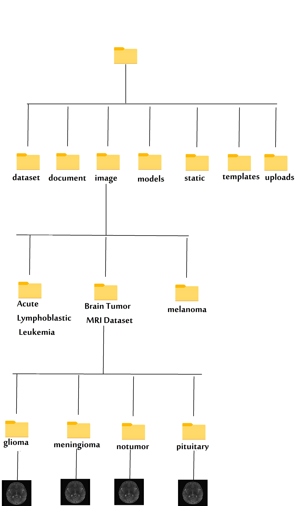
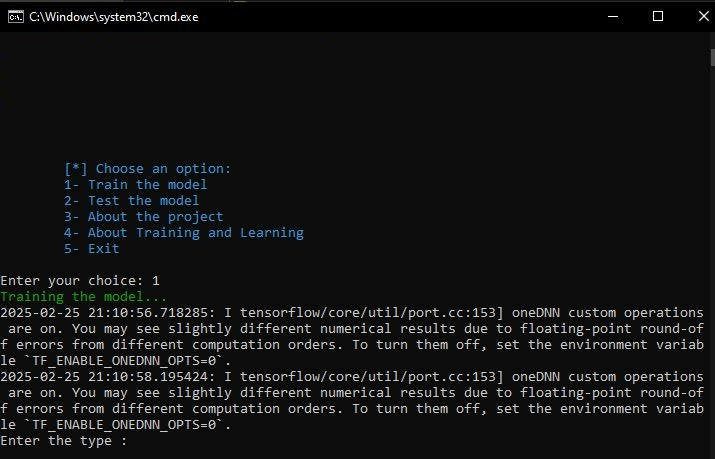
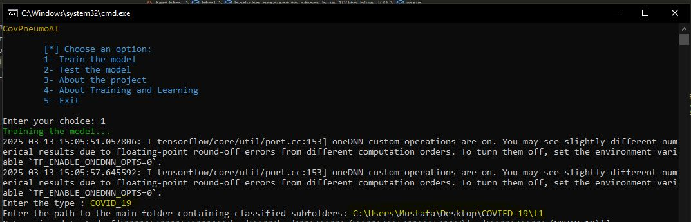
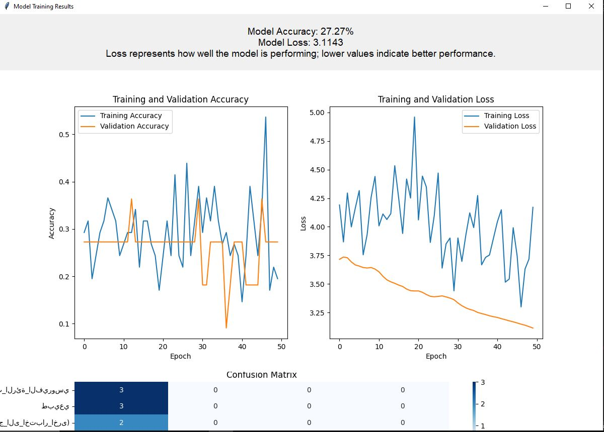

CovPneumoAI تدريب النموذج
اتبع الخطوات التالية لتدريب نموذج الذكاء الاصطناعي الخاص بك على تشخيص الأمراض.
قم بإعداد مجموعة البيانات الخاصة بك
اجمع مجموعة بيانات من الصور مصنفة في مجلدات. يجب أن يمثل كل مجلد فئة معينة، مثل أنواع السرطان أو الأورام أو مراحلها.
إضافة مجموعة البيانات إلى مجلد الصور
أضف مجلد مجموعة البيانات إلى image المجلد في دليل المشروع.
تشغيل البرنامج النصي للاختبار
انقر نقر مزدوج run.bat لبدء عملية الاختبار. اختر الخيار 1 من القائمة.
حدد خيار التدريب
اختر الخيار 1 من القائمة لبدء عملية التدريب.
اسم المرض أو نوعه
أدخل اسمًا للمرض أو النوع الذي تدرب النموذج عليه.
حدد مجلد الصورة الرئيسي
حدد مجلد الصورة الرئيسي الذي أضفته إلى image المجلد. سيقوم النظام باستخراج المجلدات الفرعية كفئات للتصنيف.
عملية التدريب
سيتدرب النظام على الصور في كل فئة. في نهاية التدريب، سيُنتج ملفين:
-
model.kreas: يحتوي على معلومات التدريب. -
model.csv: يحتوي على بيانات وصفية حول عملية التدريب.
نتائج التدريب
سيظهر في نهاية التدريب النتائج التي حصل عليها النموذج اثناء التدريب والاختبار على شكب مخطط بياني كما سيظهر نسبة الدقة التي حققه النموذج في التنبوء على البيانات الصور التي تم تدريبه علبه ونسبة الخسارة (التي تشير الى التنبوء الغير صحيح )
تعتمد دقة التنبوء الصجيحة على دقة تصنيف البيانات الصور وعلى كمية البيانات
